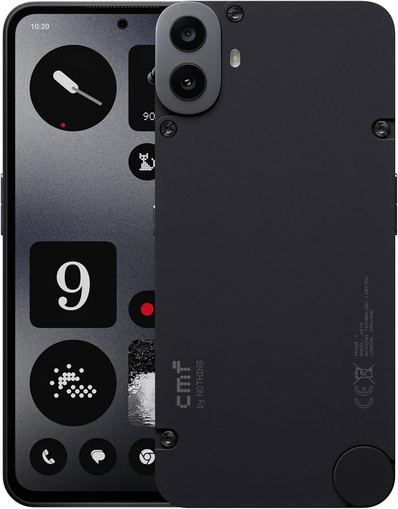

Nothing CMF Phone 1 (nothing-tetris)
| This device has been tested with postmarketOS, but its device package has not yet been added to the postmarketOS repositories. This means that it cannot be selected in pmbootstrap. |
|
 A CMF Phone 1 phone. | |
| Manufacturer | Nothing |
|---|---|
| Name | CMF Phone 1 |
| Codename | nothing-tetris |
| Model | A015 |
| Released | 2024 |
| Type | handset |
| Hardware | |
| Chipset | MediaTek MT6878 |
| CPU |
4x 2.5 GHz ARM Cortex-A78 4x ARM Cortex-A55 |
| GPU | ARM Mali-G615 MC2 |
| Display | 1080x2400 AMOLED |
| Storage | 128/256GB |
| Memory | 6GB (only in some markets)/8GB |
| Architecture | aarch64 |
| Software | |
Original software
The software and version the device was shipped with.
|
Android (Nothing OS) 14 |
Extended version
The most recent supported version from the manufacturer.
|
Android (Nothing OS) |
| FOSS bootloader | partial |
| postmarketOS | |
| Category | testing |
Mainline
Instead of a Linux kernel fork, it is possible to run (Close to) Mainline.
|
yes |
pmOS kernel
The kernel version that runs on the device's port.
|
6.17 |
Unixbench score
Unixbench Whetstone/Dhrystone score. See Unixbench.
|
10,090.4 |
{kind=link}
Flashing
It is possible to flash the device with
pmbootstrap flasher. |
Broken
|
|---|---|
USB Networking
After connecting the device with USB to your PC, you can connect to it via telnet (initramfs) or SSH (booted system).
|
Works
|
Internal storage
eMMC, SD cards, UFS, ...
|
Works
|
SD card
Also includes other external storage cards
|
Broken
|
Battery
Charging and battery level reporting works
|
Broken
|
Screen
Display works. Ideally with sleep mode and brightness control.
|
Broken
|
Touchscreen |
Broken
|
| Multimedia | |
3D Acceleration |
Broken
|
Audio
Audio playback, microphone, headset and buttons.
|
Broken
|
Camera |
Broken
|
Camera Flash |
Broken
|
| Connectivity | |
WiFi |
Broken
|
Bluetooth |
Broken
|
GPS |
Broken
|
| Modem | |
Calls |
Broken
|
SMS |
Broken
|
Mobile data |
Broken
|
| Miscellaneous | |
FDE
Full disk encryption and unlocking with unl0kr.
|
Broken
|
USB OTG
USB On-The-Go or USB-C Role switching
|
Broken
|
| Sensors | |
Accelerometer
Auto screen rotation works in desktops e.g. Phosh or Plasma Mobile
|
Broken
|
Ambient Light |
Broken
|
Haptics |
Broken
|
Power Sensor
Sensor to monitor current, voltage and power. Not fuel gauge!
|
Broken
|
Primary Bootloader
It is possible to replace stock bootloader with U-Boot.
|
Broken
|
|---|---|
Secondary Bootloader
It is possible to chainload U-Boot from stock bootloader.
|
Works
|
Mainline
Latest versions of U-Boot are not broken and it is possible to use them.
|
Broken
|
Internal Storage
It is possible to boot from internal storage (e.g. eMMC or UFS).
|
Broken
|
SD card
It is possible to boot from SD card.
|
Broken
|
USB Host
It is possible to boot from a USB storage or connect a keyboard.
|
Broken
|
USB Peripheral
It is possible to use device as a peripheral in U-Boot, e.g. for fastboot mode.
|
Broken
|
Display |
Broken
|
Keyboard |
Broken
|
Buttons
It is possible to navigate in boot menu or grub with volume and power buttons.
|
Broken
|
Contributors
- BotchedRPR
- AKArien
Users owning this device
- BotchedRPR (Notes: Mainlining, u-boot, etc.)
How to enter flash mode
- Boot menu: Hold and until you see a "NOTHING PHONE INFO" boot menu.
- Fastboot mode: Enter the boot menu, select fastboot with and enter with
- Recovery mode: Enter the boot menu, select recovery with and enter with
Installation
This device is not packaged in pmaports yet. You will be using a fork until this changes (pmaports!6985)
1. Make sure you have pmbootstrap installed, and that you have ran the init command at least once.
2. Open your pmaports directory (if you forgot, you can run pmbootstrap config aports)
3. Add the remote with this device's packages, pull, and checkout, as such:
# git remote add tetris https://gitlab.postmarketos.org/BotchedRPR/pmaports.git
# git pull tetris
<...>
# git checkout tetris
HEAD is now at 25703060f6 device-nothing-tetris: new package
4. Now, you can select the device in pmbootstrap and run install as normal.
Flashing
MT6878 devices cannot boot mainline Linux without a shim bootloader. We will be using uniLoader (unfortunately, a fork of it, hopefully these changes will make it upstream soon)
1. Clone and prepare the uniLoader fork, as such:
# git clone https://github.com/BotchedRPR/uniLoader
<...>
# cd uniLoader
# ARCH=aarch64 CROSS_COMPILE=aarch64-linux-gnu- make tetris_defconfig
<...>
2. Copy over the device binaries, to include them in the uniLoader binary, and build uniLoader, as such:
# pmbootstrap export
<...>
# cp /tmp/postmarketOS-export/vmlinuz blob/Image
# cp /tmp/postmarketOS-export/initramfs blob/ramdisk
# cp <pmbootstrap_work_dir>/chroot_rootfs_nothing-tetris/boot/mt6878-nothing-tetris.dtb blob/dtb
# ARCH=aarch64 CROSS_COMPILE=aarch64-linux-gnu- make -j$(nproc --all)
<...>
If you forgot your <pmbootstrap_work_dir> path, you can grab it using pmbootstrap config work.
3. Finally, prepare the boot image and flash it to the device.
# mkbootimg --kernel uniLoader.lz4 --header 4 --out boot.pmos-tetris.img
# fastboot flash boot boot.pmos-tetris.img reboot
Device quirks
- Fastboot appears to not work properly if the device is plugged into the host when entering fastboot mode. In this case, any fastboot command will halt seemingly forever and without action. A command can still be executed by unplugging the device, issuing the command, and then reconnecting the cable; or simply by rebooting to fastboot again without a cable connected.
- UART is not enabled by default. To enable it, you can run:
fastboot oem p2u on
UART
After enabling UART from fastboot, it can be accessed on the motherboard, close to the camera (requires disassembly). The pins operate at 1,7V.
{kind=link}